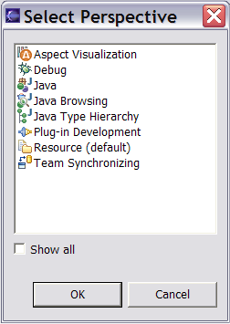
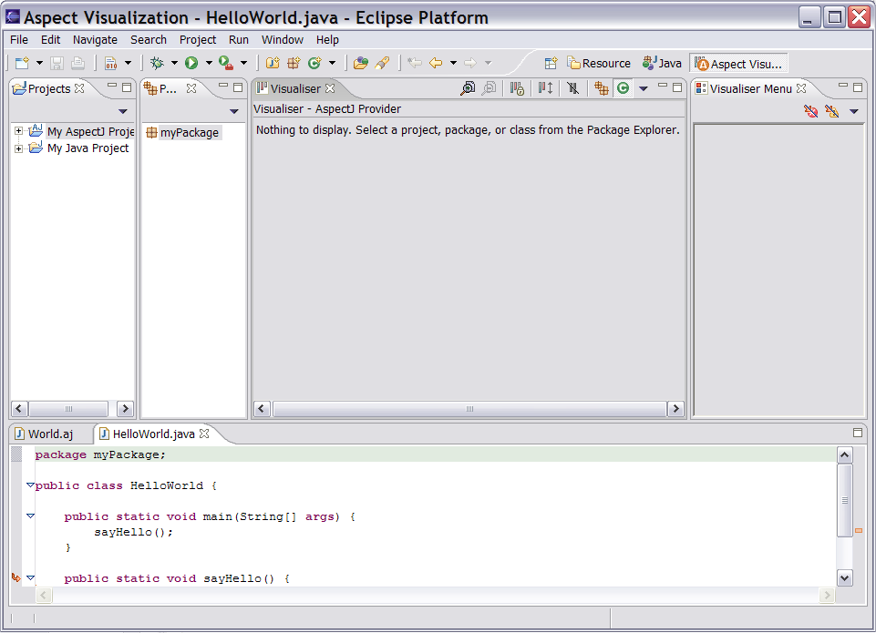
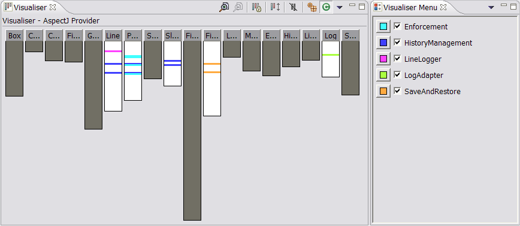
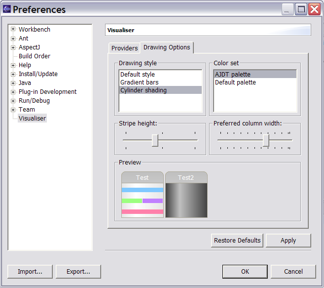

Copyright © 2004 Eclipse.org.
All Rights Reserved
If this is
the first time you have used the Visualiser, switch
to the visualization perspective by selection Window -> Open Perspective
-> Other… and then “Aspect Visualization”.

The visualization
perspective opens:

You can
switch between the Java and Aspect Visualization perspectives using the
perspective icons in the top right of the menu bar (or left-hand margin in Eclipse 2.1.x).
To start
visualizing, click on a project or package in the projects / packages views to
see a visualization for that project / package. The aspects affecting the
selected item appear in the Visualiser Menu.
You can turn them on and off in the view by
selecting and deselecting them.

The icons
in the Visualiser toolbar perform the following
functions (in left to right order) :
Double-clicking
on a stripe on one of the bars opens the editor on the advised type
at the appropriate point.
In addition the Visualiser
has a preferences page that can be used to configure minimum and maximum
bar width and minimum stripe depth for the bar drawing.

For more
information see the Visualiser help section.